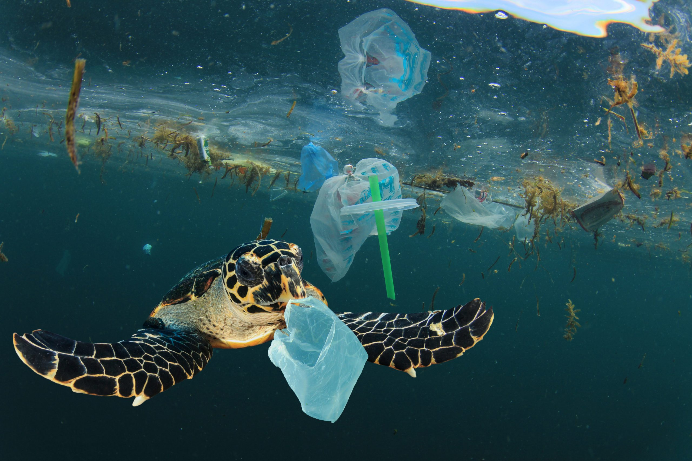

Plastic-Free Alternatives
Over 1 million marine animals (including mammals, fish, sharks, turtles, and birds) are killed each year due to plastic debris in the ocean
Currently, it is estimated that there are 100 million tons of plastic in oceans around the world.

The oceans face a massive and growing threat from plastics. An estimated 17.6 billion pounds of plastic leaks into the marine environment from land-based sources every year—that’s roughly equivalent to dumping a garbage truck full of plastic into our oceans every minute. And plastics never go away!
What you can do:
We must urge companies to provide consumers with plastic-free alternatives and say no to single use plastics such as straws, plastic cutlery, coffee cups, water bottles, plastic bags, balloons, plastic-wrapped produce and take-out food containers.
Make Sustainable Food Choices
Whales roam throughout all of the world's oceans, communicating with complex and mysterious sounds.
Their sheer size amazes us: the blue whale can reach lengths of more than 100 feet and weigh up to 200 tons—as much as 33 elephants.
When you eat seafood, make sure the seafood you choose is sustainable. One of the biggest threats to ocean health (and to coral reefs in particular) is overfishing. Removing too many fish from a reef can cause irrevocable harm to the ecosystem,
turning a vibrant and diverse coral reef into a barren wasteland covered in algae.Even farmed seafood can be a poor choice when mangrove forests are cleared for shrimp farms, or fish crammed into pens pollute the surrounding waters.
What you can do:
A handy rule of thumb is to never eat fish that are bigger or older than your grandmother. This not only ensures that slow-growing fish have had time to reproduce before they are caught but keeps you from eating harmful toxins that bioaccumulate in large fish at the top of the food chain.
Take Action at your local beach!
The great white shark is the world's largest known predatory fish. It has 300 teeth, yet does not chew its food. Sharks rip their prey into mouth-sized pieces which are swallowed whole.

Peace, tranquility, beauty and wide-ranging views are what make the coast so special and it can be easily spoiled by the sight of litter that has collected on the strandline.
If you visit the coast to walk the dog, go kite surfing or wildlife watching, always clean up after yourself and avoid disturbing wildlife or removing rocks and shells.